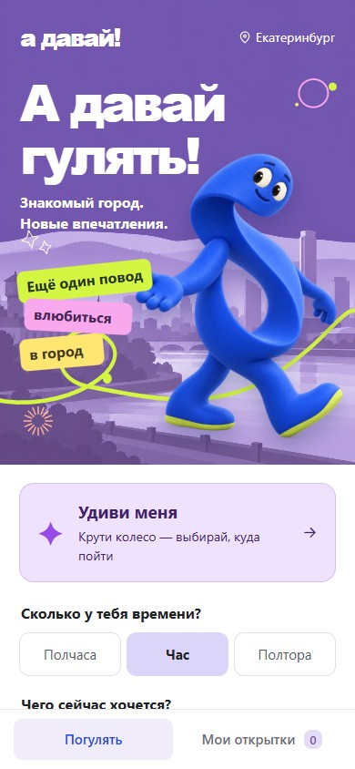
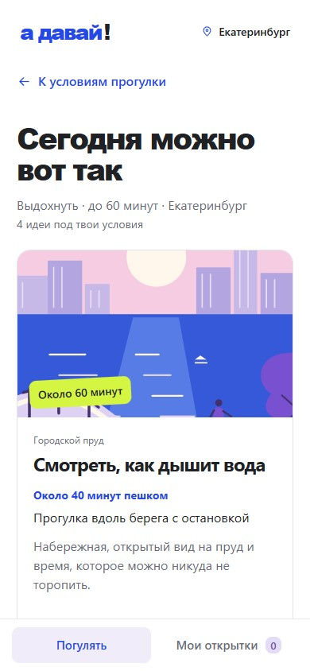
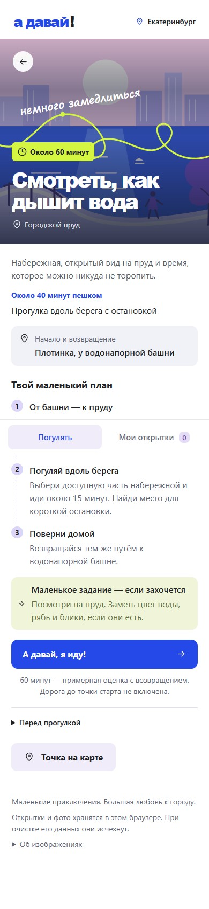

Личный проект · Веб-приложение для прогулок · Создано с помощью ИИ
А давай!
Прогулки по Екатеринбургу: от выбора места по времени и настроению до открытки с впечатлениями.
Моя работа
Ставила задачи на доработку, выбирала визуальное направление, оценивала варианты и определяла характер заданий. Код и часть визуальных материалов создавались с помощью ИИ.
От идеи погулять
до своего маршрута
В приложении можно подобрать прогулку под настроение и свободное время. Для случайного выбора есть колесо прогулок.

Выбрать настроение
Время и настроение помогают сузить выбор. Персонаж и иллюстрированный город задают характер приложения.

Найти место
Подборка предлагает идеи по заданным условиям. У каждой прогулки — краткое описание и примерное время.

Посмотреть план
Перед началом можно узнать, куда идти и что посмотреть. На прогулке доступны необязательные задания на наблюдательность.
Заметить и сохранить
За задания можно собирать стикеры. Фотография или иллюстрация, заметка и стикер складываются в открытку — её можно сохранить в альбоме и скачать в PNG.
Сохранения остаются в браузере на устройстве. Синхронизация между устройствами не предусмотрена.